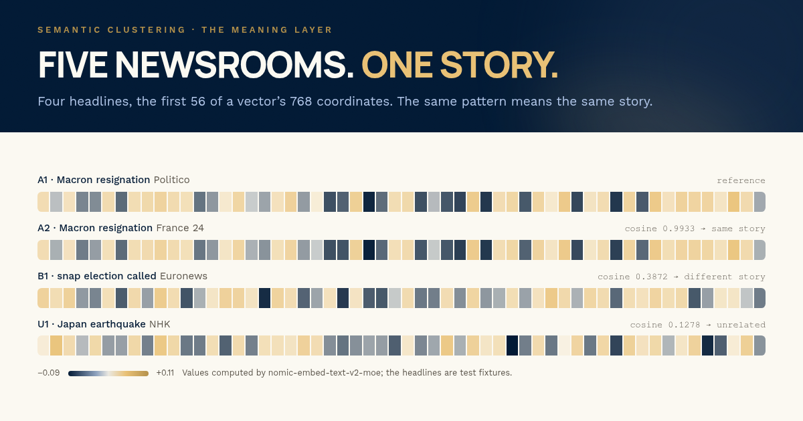

Semantic clustering · the meaning layer
Proximtype
Five newsrooms.
One story.
An embedding is a vector: a fixed-length list of numbers that a language model computes for a piece of text. Texts with similar meanings usually produce vectors that lie close together, so the system can measure their similarity as a number.
The board follows one worked example: five newsrooms report the same event in their own words, each report becomes a vector, and the angle between those vectors decides which reports belong to the same story. That topic group keeps one identity from day to day, in a PostgreSQL database with the pgvector extension. The similarity scores come from a run of the model; the headlines are test fixtures.

-
768coordinates per text
-
0.70threshold to join a group
-
0.9933same event, different words